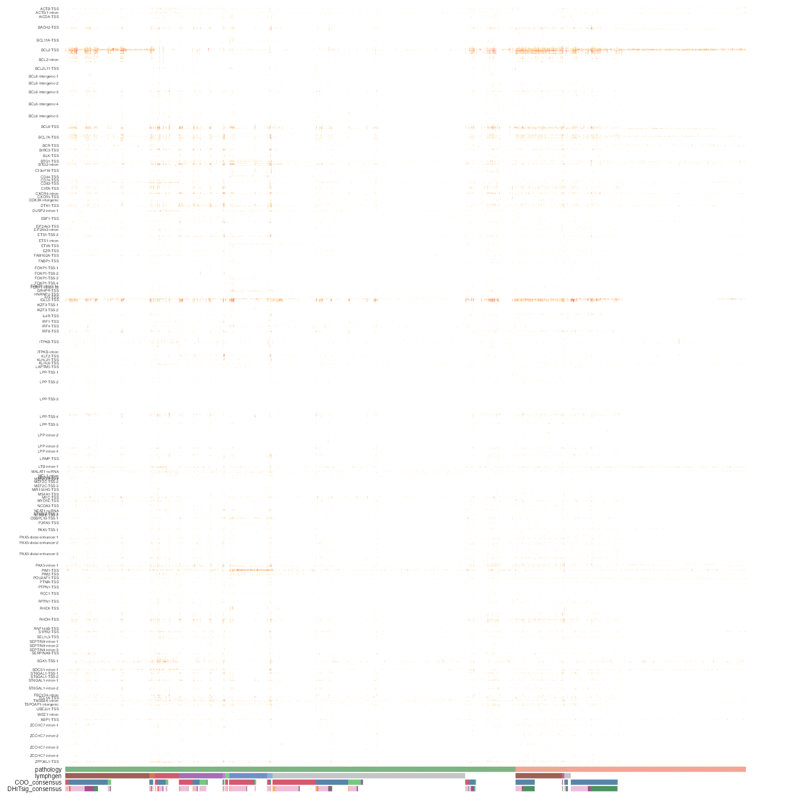

prettyMutationDensity.RdObtain a heatmap of mutation counts across sliding windows for multiple regions.
prettyMutationDensity(
regions_list = NULL,
regions_bed = NULL,
these_samples_metadata = NULL,
these_sample_ids = NULL,
this_seq_type = c("genome", "capture"),
maf_data,
mut_freq_matrix,
projection,
region_padding = 1000,
drop_unmutated = FALSE,
metadataColumns = c("pathology"),
sortByMetadataColumns = NULL,
expressionColumns = NULL,
orientation = "sample_rows",
skip_regions,
only_regions,
customColours = NULL,
naColour = "white",
backgroundColour = "transparent",
slide_by = 100,
window_size = 500,
split_regions = TRUE,
min_count_per_bin = 0,
min_bin_recurrence = 5,
min_mut_tumour = 0,
region_fontsize = 8,
clustering_distance_samples = "euclidean",
cluster_samples = FALSE,
split_samples_kmeans,
show_row_names = TRUE,
show_column_names = FALSE,
cluster_regions = FALSE,
show_gene_colours = FALSE,
label_regions_by = "name",
merge_genes = FALSE,
label_regions_rotate = 0,
legend_row = 3,
legend_col = 3,
show_legend = TRUE,
legend_direction = "horizontal",
legendFontSize = 10,
metadataBarHeight = 1.5,
metadataBarFontsize = 5,
metadataSide = "bottom",
region_annotation_name_side = "top",
sample_annotation_name_side = "left",
legend_side = "bottom",
returnEverything = FALSE,
from_indexed_flatfile = TRUE,
mode = "slms-3",
width,
height,
hide_annotation_name = FALSE,
use_raster = FALSE
)Named vector of regions in the format c(name1 = "chr:start-end", name2 = "chr:start-end"). Only one (or none) between `regions_list` and `regions_bed` arguments should be provided. If neither regions_list nor regions_bed is specified, the function will use GAMBLR aSHM region information.
Data frame of regions with four columns (chrom, start, end, name). Only one (or nome) between `regions_list` and `regions_bed` arguments should be provided.
Metadata with at least sample_id column. If not providing a maf data frame, seq_type is also required.
Vector of sample IDs. Metadata will be subset to sample IDs present in this vector.
Optional vector of seq_types to include in heatmap. Default c("genome", "capture"). Uses default seq_type priority for samples with >1 seq_type.
Optional maf data frame. Will be subset to rows where Tumor_Sample_Barcode matches provided sample IDs or metadata table. If not provided, maf data will be obtained with get_ssm_by_regions().
Optional matrix of binned mutation frequencies generated outside of this function, usually by [GAMBLR::calc_mutation_frequency_bin_regions].
Genome build the function will operate in. Ensure this matches your provided regions and maf data for correct chr prefix handling. Default grch37.
Amount to pad the start and end coordinates by. Default 1000
Whether to drop bins with 0 mutations. If returning a matrix format, this will only drop bins with no mutations in any samples.
Mandatory character vector of metadata columns to use in heatmap annotation. Default c("pathology").
Optional character vector of metadata columns to order annotations by. Will be ordered by factor levels and sorted in the order specified. Default NULL.
Optional character vector of numeric metadata columns, usually gene expression, for heatmap annotation.
Specify whether heatmap should have samples in rows ("sample_rows") or in columns ("sample_cols"). Default sample_rows.
Optional character vector of genes to exclude from the default aSHM regions.
Optional character vector of genes to include from the default aSHM regions.
Optional list of character vectors specifying colours for heatmap annotation with metadataColumns, e.g. list(pathology = c(DLBCL = "green", BL = "purple")). If left blank, the function will attempt to match heatmap annotations with existing colours from [GAMBLR::get_gambl_colours], or will default to the Blood colour palette.
Colour to use for NA values in metadata/expression. Default "white".
Optionally specify the colour for heatmap bins with 0 mutations. Default grey90.
Slide size for sliding window. Default 100.
Size of sliding window. Default 500.
Specify the minimum number of mutations per bin to be included in the heatmap. Only bins with all samples falling below this threshold will be dropped. Default 0.
Specify how many samples a bin must be mutated in to be displayed. Default 5.
Specify how many bins a tumour must be mutated in to be displayed. Default 0.
Fontsize of region labels on the heatmap. Default 8.
Boolean. Whether to add heatmap annotation colours for each region. Default FALSE.
Specify which feature of the regions to label the heatmap with. Heatmap will be split according to this value, and ordered by factor levels if the specified column is a factor. Default name.
Set to TRUE to drop everything after "-" in the label to collpse regions from the same gene/locus. Default FALSE.
Specify degree by which the label in the previous parameter will be rotated. Default 0 (no rotation). The accepted values are 0, 90, 270.
Control aesthetics of the heatmap legend. Default 3.
Control aesthetics of the heatmap legend. Default 3.
Boolean. Default TRUE.
Control aesthetics of the heatmap legend. Default "horizontal".
Control aesthetics of the heatmap legend. Default 10.
Optional argument to adjust the height of bar with annotations. The default is 1.5.
Optional argument to control for the font size of metadata annotations. The default is 5.
Default location for metadata is the bottom. Set to "top" if you want to move it
Control aesthetics of the heatmap legend. Default "bottom".
Boolean. FALSE will plot the heatmap automatically. TRUE will return a heatmap object to allow further tweaking with the draw() function. Default FALSE.
Set to TRUE to avoid using the database and instead rely on flat files (only works for streamlined data, not full MAF details).
Only works with indexed flat files. Accepts 2 options of "slms-3" and "strelka2" to indicate which variant caller to use. Default is "slms-3".
Control whether ComplexHeatmap uses rastering. default: TRUE
Boolean. Default FALSE.
Boolean. Default FALSE.
A table of mutation counts for sliding windows across one or more regions. May be long or wide.
This function takes a metadata table with `these_samples_metadata` parameter and internally calls [GAMBLR::calc_mutation_frequency_bin_region] (that internally calls [GAMBLR::get_ssm_by_regions]). to retrieve mutation counts for sliding windows across one or more regions and generate a heatmap. May optionally provide any combination of a maf data frame, existing metadata, or a regions data frame or named vector.
library(GAMBLR.open)
# get meta data
my_meta <- get_gambl_metadata() %>%
dplyr::filter(pathology %in% c("FL","DLBCL"), seq_type != "mrna") %>%
check_and_clean_metadata(duplicate_action = "keep_first")
#> 3258 capture samples are missing a value for protocol. Assuming Exome.
#> 123 biopsies are missing from the biopsy metadata. This should be fixed!
#> affected cohorts: DLBCL_LSARP_Trios,SMZL_Strefford,cHL_Maura,MCL_Barcelona
#> 110 biopsies with discrepancies in the pathology field. This should be fixed!
#> 10 biopsies with discrepancies in the time_point field. This should be fixed!
# get ashm regions of a set of genes.
my_regions = create_bed_data(GAMBLR.data::grch37_ashm_regions,
fix_names = "concat",
concat_cols = c("gene","region"),sep = "-")
# create heatmap of mutation counts for the specified regions
meta_columns <- c("pathology",
"lymphgen",
"COO_consensus",
"DHITsig_consensus")
suppressMessages(
suppressWarnings({
prettyMutationDensity(
regions_bed = my_regions,
these_samples_metadata = my_meta,
metadataColumns = meta_columns,
orientation="sample_columns",
sortByMetadataColumns = meta_columns,
projection = "grch37",
backgroundColour = "transparent",
show_legend = FALSE,
region_fontsize = 3)
}))
